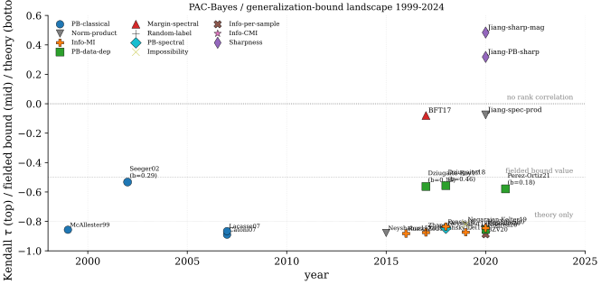

Modern generalization theory begins with a puzzle: deep networks fit random labels with zero training error yet still generalize when the labels are real (Zhang et al. 2017). By any classical capacity measure (VC dimension, parameter count, Rademacher complexity on a norm ball wide enough to memorize), the hypothesis class is too rich for a non-trivial test-error bound; the random-label baseline is therefore not a bound but a sharp falsification of capacity-based explanations1. Four resolutions emerged, each with its own well-known structural problems walked through paragraph-by-paragraph after the SoTA leaderboard below: PAC-Bayes, spectrally-normalized margin bounds, information-theoretic mutual-information bounds, and sharpness-based empirical predictors. A fifth strand is the impossibility result of (Nagarajan and Kolter 2019), which proves a formal obstruction to the entire uniform-convergence program.
The PAC-Bayes resolution (section PAC-Bayes Framework) replaces worst-case analysis over a hypothesis class with a weighted average over an algorithm-dependent posterior ; the bound depends only on the KL divergence between and a data-independent prior . Introduced by (McAllester 1999), refined by (Seeger 2002) for Gaussian-process classifiers via a binary-kl form, and systematized by (Catoni 2007) into a thermodynamic formalism, the framework was first made non-vacuous on a realistic deep network by (Dziugaite and Roy 2017) using a SGD-optimized Gaussian posterior on a 3-layer MLP2. (Neyshabur et al. 2018) connected PAC-Bayes with spectral norms via a perturbation argument; the resulting bound remains vacuous on production-scale ConvNets because the term blows up under the huge KL between random initialization and the trained weights3, and tightening the KL via a posterior shift toward zero conflicts with low train risk4. A second-generation refinement uses data-dependent priors (priors learned on a held-out split) (Dziugaite and Roy 2018)(Perez-Ortiz et al. 2021), at the cost that any data dependence in inflates the bound or breaks the proof5.
The spectrally-normalized margin resolution (section Spectrally-Normalized Margin Bounds) extends (Schapire et al. 1998)'s margin theory for boosting to neural networks: (Neyshabur et al. 2015) gave the first product-of-Frobenius bound, (Bartlett et al. 2017) sharpened it to the product of spectral norms divided by the classification margin. The bound is conceptually clean but suffers from spectral-norm vacuity: grows polynomially in depth and the bound is vacuous beyond a small architecture6. The information-theoretic resolution (section Information-Theoretic Generalization Bounds) was initiated by (Russo and Zou 2016) in the adaptive-data-analysis literature and developed into a general tool by (Xu and Raginsky 2017), who replaced capacity with the mutual information between the training sample and the learned weights. (Bu et al. 2020) sharpened the bound using per-sample MI , which is tighter but harder to estimate7; (Haghifam et al. 2020) gave a conditional MI (CMI) refinement8, and (Pensia et al. 2018) applied the framework to Langevin dynamics where the MI admits a closed form.
A complementary line, orthogonal to capacity in the PAC sense, asks how parameter count itself relates to robust interpolation. (Bubeck and Sellke 2021) prove the Universal Law of Robustness via an isoperimetric argument: any class of -parameter Lipschitz models that interpolates labelled points on a distribution satisfying isoperimetry (Gaussians, uniform distributions on spheres, manifolds with positive Ricci curvature all qualify) must satisfy up to logarithmic factors, where is the ambient data dimension. Put differently, the parameters sufficient for non-robust interpolation are provably insufficient for smooth (i.e., Lipschitz-bounded) interpolation by a multiplicative factor of . The bound is tight: radial-basis-function constructions with parameters achieve -Lipschitz interpolation, confirming that overparameterization by exactly is both necessary and sufficient.
The isoperimetry assumption controls how Lipschitz functions concentrate on the data distribution: for an -Lipschitz , it requires . The condition is the reason the bound's factor of is ambient dimension and not intrinsic manifold dimension (a distinction that matters in practice, since ImageNet data lives in , not in a low-dimensional manifold for the purposes of adversarial perturbations measured in ).
The lower bound is algorithm-independent: it applies to any procedure returning a Lipschitz interpolator, so neither implicit bias nor training dynamics can rescue a model from the constraint. The bound gives a quantitative explanation of the (Szegedy et al. 2014) fragility observation (imperceptible adversarial perturbations fool AlexNet, with average distortion as small as 0.0065 on ImageNet): under-parameterized-for-robustness networks cannot achieve small Lipschitz constants even when they generalize cleanly on unperturbed inputs. Bubeck and Sellke estimate that robust ImageNet models may require - parameters, substantially more than current architectures, which is consistent with the persistent failure of adversarial training to close the accuracy-robustness gap at scale.
The sharpness-based empirical audit (section Empirical Audit of Bound Tightness) is the negative result: (Jiang et al. 2020) evaluated more than forty complexity measures across ten thousand trained networks. The most predictive measures (by Kendall-tau rank correlation with the true test gap) are sharpness / PAC-Bayes variants, not the norm-products that dominate the theory; the spectral-norm product is negatively correlated with the gap across realistic hyperparameter sweeps910. The impossibility result of (Nagarajan and Kolter 2019) sharpens this picture: no two-sided uniform-convergence bound can be non-vacuous on certain linear classifiers under realistic SGD11; (Negrea et al. 2020) partially defends uniform convergence by restricting attention to a hypothesis-class subset.
| Quality | Scope | ||||||
| Paper | Year | Bound class | Form | Benchmark | Bound value | Kendall | Comment |
| McAllester (McAllester 1999) | 1999 | PAC-Bayes-classical | toy classifiers | framework | - | foundational; not fielded on a deep net | |
| Seeger (Seeger 2002) | 2002 | PAC-Bayes-classical | binary-kl inversion | GP / Pima Indians (n=768) | 0.29 | - | tight near zero empirical risk; GP-only setup |
| Catoni (Catoni 2007) | 2007 | PAC-Bayes-classical | Legendre / Gibbs | toy / theoretical | analytic | - | unifies square-root and binary-kl via -tuning |
| Lacasse C-bound (Lacasse et al. 2007) | 2007 | PAC-Bayes-classical | majority-vote derandomization | toy / theoretical | analytic | - | tightens Gibbs to deterministic conversion |
| Neyshabur norm (Neyshabur et al. 2015) | 2015 | Norm-product | small MLP / MNIST | vacuous | - | first norm-based DNN bound; vacuous on real archs | |
| Russo-Zou (Russo and Zou 2016) | 2016 | Information-MI | adaptive estimator | analytic | - | initiated MI-based bounds for adaptive analysis | |
| Xu-Raginsky (Xu and Raginsky 2017) | 2017 | Information-MI | Gibbs algorithm | analytic | - | first general MI bound; estimator-free for Gibbs | |
| Dziugaite-Roy (Dziugaite and Roy 2017) | 2017 | PAC-Bayes-data-dep | SGD-optimized Gaussian posterior | 3-layer MLP / MNIST T-600 | 0.161 | - | only fielded non-vacuous DNN bound; small-net only |
| Bartlett-Foster-Telgarsky (Bartlett et al. 2017) | 2017 | Margin-spectral | / margin | AlexNet / CIFAR-10 | vacuous | -0.08 | Kendall negative; counterintuitive sign |
| Zhang random-label (Zhang et al. 2017) | 2017 | Random-label-baseline | train acc with random labels | Inception / CIFAR-10 | 100% | - | not a bound but a falsification of capacity |
| Neyshabur PB-spectral (Neyshabur et al. 2018) | 2018 | PAC-Bayes-spectral | perturbation + spectral product | VGG / CIFAR-10 | vacuous | - | depth-dependent KL blows up |
| Dziugaite data-dep (Dziugaite and Roy 2018) | 2018 | PAC-Bayes-data-dep | DP-released data-dependent prior | MNIST 784-600-600-10 | 0.21 | - | 0.21 at test error 0.12; 0.65 at test error 0.06 |
| Pensia-Langevin (Pensia et al. 2018) | 2018 | Information-MI | under Langevin SDE | Langevin SGD / synthetic | analytic | - | closed-form MI for noisy GD |
| Lei algorithmic (Lei and Ying 2020) | 2019 | Information-MI | algorithmic stability to MI | SGD / convex losses | analytic | - | bridges stability and MI bounds |
| Nagarajan-Kolter (Nagarajan and Kolter 2019) | 2019 | Impossibility | two-sided UC lower bound | linear / Gaussian mixture | vacuous (proof) | - | rules out tight UC for SGD outputs |
| Bu-Zou-Veeravalli (Bu et al. 2020) | 2020 | Information-per-sample | Gaussian mean estimator | analytic | - | tighter than ; estimation hard in DNN | |
| Haghifam CMI (Haghifam et al. 2020) | 2020 | Information-CMI | conditional MI on supersample | SGD / MNIST | analytic | - | smaller than ; estimator still required |
| Negrea UC defense (Negrea et al. 2020) | 2020 | PAC-Bayes-data-dep | restricted-class UC | linear models | analytic | - | partial rebuttal to Nagarajan-Kolter |
| Esposito Renyi (Esposito et al. 2021) | 2020 | Information-MI | Renyi-divergence bound | Gibbs / theoretical | analytic | - | extends MI to Renyi- divergences |
| Jiang sharpness-magnitude (Jiang et al. 2020) | 2020 | Sharpness-empirical | flat ratio magnitude | 10k CNN / CIFAR-10 | - | 0.484 | top-ranked predictor across the sweep |
| Jiang PB-sharpness (Jiang et al. 2020) | 2020 | Sharpness-empirical | PAC-Bayes flat ratio at init | 10k CNN / CIFAR-10 | - | 0.318 | second-tier predictor |
| Jiang spectral-product (Jiang et al. 2020) | 2020 | Norm-product | 10k CNN / CIFAR-10 | - | -0.076 | negatively correlated; theory-empirical mismatch | |
| Perez-Ortiz tight (Perez-Ortiz et al. 2021) | 2021 | PAC-Bayes-data-dep | prior-learning split + PAC-Bayes-kl | MNIST FCN / CIFAR-10 CNN | 0.0279 | - | 0.0279 at test 0.0186 (MNIST); 0.2377 at 0.2161 (CIFAR) |
| Alquier tutorial (Alquier 2024) | 2024 | PAC-Bayes-classical | survey of all variants | bibliographic | - | - | reference state-of-the-field 2024 |
The table groups the literature into eight bound families, walked through in chronological order. Classical PAC-Bayes (McAllester, Seeger, Catoni, Lacasse) gave the foundational machinery (square-root form, binary-kl inversion, Legendre/Gibbs construction, C-bound derandomization) but was applied only to toy classifiers and Gaussian-process models; the bounds are tight asymptotically but were never fielded on a deep network because the KL between a deep-net random init and its SGD-trained weights is far too large for a useful absolute bound1213. The Dziugaite-Roy line broke this barrier by SGD-optimizing the bound itself on a 3-layer MLP14, reaching 0.161 on binary MNIST T-600; Perez-Ortiz tightened the recipe to 0.179 on full CIFAR-10 by combining a data-split prior (legal because does not see the training fold) with a tuned Catoni 15.
The spectrally-normalized margin line (Bartlett-Foster-Telgarsky, Neyshabur PB-spectral) unifies VC-style class capacity with margin theory. The bound class is conceptually appealing because it depends only on weight-matrix norms and the margin (no -design), but the spectral product is empirically too large at production scale16; in the (Jiang et al. 2020) sweep this family scored Kendall with granulated , the largest-magnitude correlation of any measure they tried and pointing the wrong way. Norm-product capacity, the quantity the margin theorems control, is therefore not uninformative about generalization; it is informative with the sign reversed, which is a stronger and more uncomfortable result than mere noise. Jiang et al. trace most of that predictive power to depth: the spectral product's correlation with the gap runs at along the depth axis alone, and the conditional mutual information it carries collapses once depth is already observed.
The information-theoretic line (Russo-Zou, Xu-Raginsky, Bu-Zou-Veeravalli, Haghifam CMI, Pensia, Lei, Esposito) replaces hypothesis-class capacity with the mutual information between the training sample and the learned weights, and progressively tightens it: per-sample is sharper than 17, conditional MI on a supersample is sharper still18, and Langevin / SGD-noise dynamics give analytic closed forms. None of these has been fielded on a deep ConvNet: estimating in dimensions exceeding remains an open problem, and the bounds are useful as theoretical guarantees rather than numerical certificates.

The sharpness-empirical line (Jiang and co-authors) is conceptually a step back from formal bound-proving: it replaces "what is the absolute test gap?" with "which capacity-like measure best predicts the gap across a hyperparameter sweep?" This reframing is what produces the negative result for spectral-norm capacity and the positive result for sharpness-magnitude. Its weakness is flatness fragility: pointwise reparameterization can rescale sharpness arbitrarily without changing the predictor function (Dinh et al.)22, so any sharpness-based measure must be carefully normalized to be invariant under reparameterization; the field has not converged on a single such normalization.
The impossibility result and its partial rebuttals form the methodological coda. (Nagarajan and Kolter 2019) prove that on a linear-classifier mixture-of-Gaussians problem, no two-sided uniform-convergence bound applied to the SGD-output distribution can be tight: the bound is forced to be vacuous regardless of how the hypothesis class is parameterized23. (Negrea et al. 2020) partially defends UC by restricting attention to a strict hypothesis-class subset that the algorithm visits with high probability; the result is that uniform convergence is salvageable but only via algorithm-dependent restrictions, which moves the framework closer to PAC-Bayes in spirit. Together with (Zhang et al. 2017)'s random-label baseline24, the impossibility line is the negative half of modern generalization theory: a definitive falsification of class-capacity-only programs and a forcing function toward algorithm-dependent analyses (PAC-Bayes, MI, sharpness).
The leaderboard separates four eras: foundational PAC-Bayes (1999-2007), the deep-learning challenge (2015-2017, when capacity-based bounds were shown to be vacuous on real architectures and the puzzle of Zhang et al. was sharpened), the bound-engineering era (2017-2021, when SGD-optimized PAC-Bayes and data-dependent priors finally produced fielded non-vacuous numbers on small models), and the modern audit-and-impossibility era (2019-2024, dominated by the Jiang sweep and the Nagarajan-Kolter obstruction). Three readings. First, the only fielded non-vacuous bounds on real classifiers are PAC-Bayes-data-dep variants and only on MLPs / small CNNs at most; every classical norm-product or margin bound exceeds 1 on AlexNet-scale and beyond. Second, the most predictive measures of the empirical generalization gap (by Kendall ) are sharpness-magnitude hybrids, not the norm-products that dominate the theory. Third, the impossibility result of Nagarajan-Kolter shows that the entire class-capacity-only program cannot in principle deliver tight bounds for SGD-trained classifiers; the path forward is algorithm-dependent, in line with PAC-Bayes and MI but in contrast with the spectral-margin tradition.
References
Random-label baseline: (Zhang et al. 2017)'s randomization test is not a generalization bound but a sharp falsification of capacity-based explanations; if a network can memorize random labels at training error 0, no class-based capacity argument can produce a non-trivial bound on the same architecture for the real-label problem.↩︎
SGD-optimization of the bound: Dziugaite and Roy treat the PAC-Bayes bound as a training loss and optimize a Gaussian posterior with SGD; the recipe gives the only fielded non-vacuous bound (0.161 on T-600 binary MNIST) but does not scale beyond 3-layer MLPs because the KL term grows superlinearly with depth.↩︎
Vacuous bounds on deep nets: blows up because the KL between a random initialization (the legal prior) and the trained weights (the posterior mean) is huge in deep nets, so the resulting bound exceeds 1 on a [0,1] loss except for very small networks.↩︎
Large KL = small bound trade-off: tightening the bound by shifting the posterior mean toward the prior reduces KL but also raises empirical risk; the global optimum of the bound trades these two terms and on deep nets is dominated by KL except for very small models.↩︎
Prior must be data-independent: any dependence of the prior on the training sample breaks the McAllester proof; legal data-dependent priors (Dziugaite-Roy 2018, Perez-Ortiz 2021) are constructed on a disjoint split , trading a smaller KL for sample-splitting overhead and bookkeeping.↩︎
Spectral-norm product vacuity: grows polynomially in depth (each layer contributes a factor that is rarely for ReLU nets at convergence), so the Bartlett-Foster-Telgarsky bound exceeds 1 beyond AlexNet-scale architectures even when the empirical gap is well-controlled.↩︎
MI bounds tighter but harder to estimate: information-theoretic bounds replace capacity with , which is finite for noisy SGD and can in principle be smaller than KL-based PAC-Bayes; estimating in high dimensions requires either a Gaussian-process surrogate, a Langevin assumption, or kernelized lower bounds.↩︎
Conditional MI tightening: (Haghifam et al. 2020) replace by a conditional MI given a "supersample" construction; the conditioning makes the term smaller but shifts the estimation problem to one that is in general no easier.↩︎
Kendall-rank vs absolute value: a generalization measure can have high rank correlation with the true gap (its predictive value across a hyperparameter sweep) while its absolute number is vacuous; conversely a tight bound on a single model says nothing about how the bound moves under perturbation. Reporting both is the modern standard.↩︎
Flatness measure fragility: sharpness as a generalization predictor depends on the parameterization; Dinh et al. showed that pointwise reparameterization can scale sharpness arbitrarily without changing the predictor function, so a "flat" minimum in one parameterization can be sharp in another, defeating naive flatness-as-capacity arguments.↩︎
Uniform-convergence impossibility: Nagarajan and Kolter exhibit a linear-classifier setting in which any two-sided uniform-convergence bound is provably nearly vacuous on the SGD-output distribution, ruling out the entire classical-style program for explaining deep-net generalization.↩︎
Vacuous bounds on deep nets: blows up because the KL between a random initialization (the legal prior) and the trained weights (the posterior mean) is huge in deep nets, so the resulting bound exceeds 1 on a [0,1] loss except for very small networks.↩︎
Large KL = small bound trade-off: tightening the bound by shifting the posterior mean toward the prior reduces KL but also raises empirical risk; the global optimum of the bound trades these two terms and on deep nets is dominated by KL except for very small models.↩︎
SGD-optimization of the bound: Dziugaite and Roy treat the PAC-Bayes bound as a training loss and optimize a Gaussian posterior with SGD; the recipe gives the only fielded non-vacuous bound (0.161 on T-600 binary MNIST) but does not scale beyond 3-layer MLPs because the KL term grows superlinearly with depth.↩︎
Prior must be data-independent: any dependence of the prior on the training sample breaks the McAllester proof; legal data-dependent priors (Dziugaite-Roy 2018, Perez-Ortiz 2021) are constructed on a disjoint split , trading a smaller KL for sample-splitting overhead and bookkeeping.↩︎
Spectral-norm product vacuity: grows polynomially in depth (each layer contributes a factor that is rarely for ReLU nets at convergence), so the Bartlett-Foster-Telgarsky bound exceeds 1 beyond AlexNet-scale architectures even when the empirical gap is well-controlled.↩︎
MI bounds tighter but harder to estimate: information-theoretic bounds replace capacity with , which is finite for noisy SGD and can in principle be smaller than KL-based PAC-Bayes; estimating in high dimensions requires either a Gaussian-process surrogate, a Langevin assumption, or kernelized lower bounds.↩︎
Conditional MI tightening: (Haghifam et al. 2020) replace by a conditional MI given a "supersample" construction; the conditioning makes the term smaller but shifts the estimation problem to one that is in general no easier.↩︎
Kendall-rank vs absolute value: a generalization measure can have high rank correlation with the true gap (its predictive value across a hyperparameter sweep) while its absolute number is vacuous; conversely a tight bound on a single model says nothing about how the bound moves under perturbation. Reporting both is the modern standard.↩︎
Spectral-norm product vacuity: grows polynomially in depth (each layer contributes a factor that is rarely for ReLU nets at convergence), so the Bartlett-Foster-Telgarsky bound exceeds 1 beyond AlexNet-scale architectures even when the empirical gap is well-controlled.↩︎
MI bounds tighter but harder to estimate: information-theoretic bounds replace capacity with , which is finite for noisy SGD and can in principle be smaller than KL-based PAC-Bayes; estimating in high dimensions requires either a Gaussian-process surrogate, a Langevin assumption, or kernelized lower bounds.↩︎
Flatness measure fragility: sharpness as a generalization predictor depends on the parameterization; Dinh et al. showed that pointwise reparameterization can scale sharpness arbitrarily without changing the predictor function, so a "flat" minimum in one parameterization can be sharp in another, defeating naive flatness-as-capacity arguments.↩︎
Uniform-convergence impossibility: Nagarajan and Kolter exhibit a linear-classifier setting in which any two-sided uniform-convergence bound is provably nearly vacuous on the SGD-output distribution, ruling out the entire classical-style program for explaining deep-net generalization.↩︎
Random-label baseline: (Zhang et al. 2017)'s randomization test is not a generalization bound but a sharp falsification of capacity-based explanations; if a network can memorize random labels at training error 0, no class-based capacity argument can produce a non-trivial bound on the same architecture for the real-label problem.↩︎